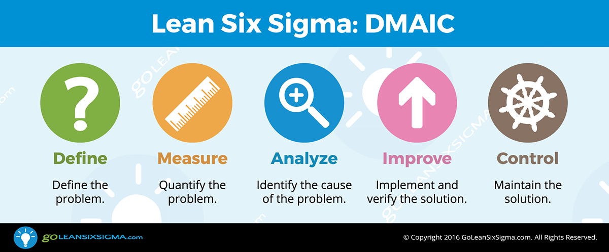
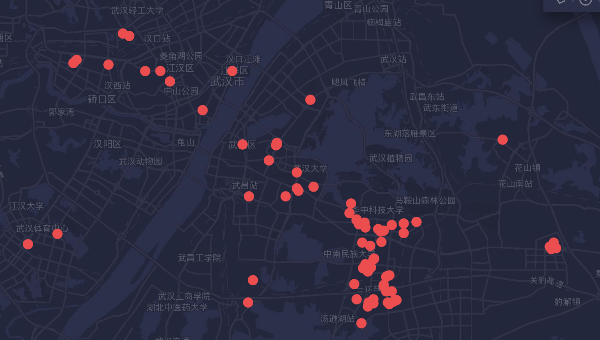

本书介绍
本文是在看房中的一些分享与总结，仅供个人参考，不作为预测基准，也不作为商业用途。
如果有在深圳/东莞/武汉的工友，我很乐意去一起看
面向读者
- 码农等较高收入群体首套刚需接盘侠
- 大部分场景仅考虑自住场景
- 有较强的自学能力与数据处理(Excel/可视化)使用水平
为读者提供了
- 一些买房常识
- 中介的各种坑
- 希望能够打破现有的思维高度，提高自己的境界
技术交流
license
本作品采用知识共享署名-非商业性使用 4.0 国际许可协议进行许可。并请勿转载到任何国内域名下的网站。
购房流程
综述
购房与6 Sigma等项目交付的质量流程是一样的，也是需要方法论(Methodology)的，是基于数据事实进行决策的过程，你需要
- 对潜在风险进行识别
- 看房过程中持续改进
- 对购买失误进行根因分析
一般来说，交首付前信息量少，而损失低。交首付后判断信息变多，而现在就损失大了。因此购房就是一个从小白到领域专家，并分析风险的学习过程。网上的质量管理文章非常多了，这里就不多讲了，以常见的DMAIC为例。

上面的图虽然看起来很专业，但是正如在项目中没有领域专家6-Sigma就反而是负担一样，上面的流程缺少懂领域业务的“HOW”是无法走下去的，我们接着往下看如何解决。
投入时间
买房需要投入时间精力，搜集信息并做出决策，它取决于你的洞察视野以及社会经验，作为码农整天敲电脑，你的渠道就会很少。因此你需要扩展自己的渠道，才能定义，度量与分析问题。不要担心耽误因此了上班，你看房节约的钱，可能比上班一年还多。
- 你当初高考选择大学与城市，决定了你后期的工作
- 你选择跳槽，决定了你后期发展与时薪
- 你选择的对象，决定了后期的幸福生活
- 你选择买房，决定了后期的居住通勤等生活质量
虽然上面的话有点像中介逼定套路，然而很多人面对这种选择时，却投入很少的时间就做出了不理智的选择。任何有经验的老同事都一定对你教导过，选择比努力更重要，要利用优势为杠杆并全新投入。
H公司的任总曾经说到
对于前沿科学，研发实行先“开一枪”，“让子弹飞一会儿”；看到线索再“打一炮”，只需要小范围研究讨论就能决定；如果攻“城墙口”需要投入“范弗里特弹药量”（意指不计成本地投入庞大的弹药量进行密集轰炸），由管理层集体决策。
这种策略在进行买房调研时也可以参考，当然这里不是让你交学费亏钱，而是依靠的是对项目状况的决策，要“看到线索”后明确目标并投入大量精力来实现。
相比于16，17年买了就能挣钱，现在18年的限购政策，加息，贸易战等因素更加复杂，因此一定需要投入更多的时间去了解房子（这样写起来真有点悲哀，为了房子而忽略了实业工作，可以说是厉害了我的国了👍）
数据源(兼听则明)
与码农通过Github或者StackOverflow不同，买房的信息渠道是分散的，因此你需要整理识别，需要消耗大量的时间去判断并做出结论
- 切忌单打独斗，一定要及时求助他人
- 最推荐找熟人介绍的靠谱中介(比如深圳的exHWer转行做中介，点数低，从相亲到离婚全部一条路搞定)
- 本地论坛(比如武汉的光谷论坛)
- 住建局/规划局发文(验证中介是不是在扯淡)
- 公司论坛/微信群(公司内部员工比较靠谱)
- 社会微信群/小秘圈/微博(一些大V，自己辨别)
看完了各种帖子与讨论后，一定要记下来，记下来，记下来，并形成结构化(比如CSV文件)与非结构化数据(比如某个地段的笔记)！否则就跟看微博一样走马观花，马上就忘了。
可视化
通过数据可视化工具将信息总结为表格，并基于地理位置去做分析。并得出结论
- 可视化工具
- QQ地图街景
- 谷歌Eearh(可以显示网格图，最推荐)
通过上面数据源与可视化两步的过程，你应该就明白了买房的各个关键点，然而现在还是纸上谈兵，关键点因素可能有数十个，你自己没法加权获取到主要因素。
现场看房(DOE)
现场看房也就是所谓的踩盘了，踩盘可以看作一种低成本的DOE方法论，通过观察实地，感受真实配套对自己的影响，总结出自己的关键点加权值，这样你在进行后续买房时对比因素时(比如A区的交通好，而B的商圈好)，可以基于加权进行量化对比，而不是反复主观纠结
买房
此部分就是谈价钱了，后续有专题来详解
设定目标
本章节仍然是纸上谈兵。你需要做的
- 加入各种微信群，问过各种中介
- 设定自上而下的目标
- 真实到现场看
首付预算
在买房前，要算好自己能承担的首付，然后再反推出总价钱。
1.是否要用消费贷？
众所周知，消费贷是政府严查的，而且所谓的5%的利息，如果不是先息后本，实际上利率是10%。因此要想好自己的还款能力，不要把自己杠杆玩死了，比如自己生病等意外，是否能够承受。
我个人建议，每个月扣掉房租吃喝还贷，至少要有2k的保底，否则从心理上来说可能半年晚上都焦虑的睡不着(反复后悔，给自己加暗示等)。第二个万一家庭出现问题，很可能出现跳楼维权等问题。在经济上升期，可以考虑使用这种形式；如果是下降期，建议降低负债，因为消费贷大多数是浮动利率，随时可能加息。
如果你是新手使用消费贷，我建议买比较稳的房子，而不是用于投资
2.找对象
如果两人一起买，那么压力将小很多，加上双方父母，其实可以很轻松筹资买一套中等的房子，父母也会提供很多指导与帮助。所以如果你还是单身的话还是先找对象吧(PS: 作者也找对象，有兴趣可以查看)。当然加名字等内部问题，不在本文的讨论范围内，我个人建议先只上一个人，不要浪费首付指标。
吃软饭才是王道，你就不用辛辛苦苦看这本GitBook啦，码农一点也没前途!
3.量力而行
如果你加入过一些买房群，你就会被群中的消息比如深圳某大神使用600万消费贷买房，HW员工一回国就全款买房，某人炒房到最后住上深圳湾，ALI员工随便7本等等消息，自己就会感到非常焦虑，担心以后越来越买不起房，每天忧心忡忡，睡不着觉。
虽然所有的同事都语重心长地告诉过你，要在自己范围内稍微透支一点未来去一步到位。但是时过境迁，以前的一步到位与现在的杠杆压力完全不同（起码翻了一倍，这个大家没意见吧），但是你如果觉得自己一定要买一个地铁学区低容积率有车位的花园三房，就会被各种条条框框限死，导致出现很多无法解决的压力。第一次买房，如果没有很多外界相助的话，建议还是“量力而行”，不要自己用预制条件卡死自己。
假如自己预算有限，是不是可以接受买一个临街的高容积率地铁两房呢？是不是可以买一个地段非常好的一房一厅呢？
不同年龄段的人要做不同的事情。你只有在正确的年龄做出正确的选择，才能活得轻松点。本部分的预算主要还是面向的是刚工作不久的新人，而不是已经34的中年人，这时就要考虑负担的，不要加那么高的杠杆。
是投资还是自住
如果是投资，我认为懂投资的人起码自己已经有住房，能够Hold住中介，能够投资地段预期，有自己的战略。比如深圳大梅沙(or重庆)的很多守望者很久以前就低价布局并长期持有(低价长持)，等待通地铁，现在2018年重庆暴涨翻了一倍；有人买内环单房，需要卖时当天就能出售；有人买地铁沿线公寓长期以租抵供。这些做投资人的视野，现金，时间与普通的上班族是不能相比的，上班族不要拿他们的长线来指导自己短线。
如果是刚需自住，那么我建议在同样的首付下，买利好刚刚释放(也就是买在右侧，比如地铁等基建已经规划在建，但还没建好)，当然也更贵的位置(避免失眠)
如果是自住兼投资，那么呵呵，你肯定选的是一个很偏的位置，等买车或者5年后规划地铁吧，人生有几个五年呢。举个例子，深圳龙岗经常出现学位而维权的问题，这个就是规划问题，现在也无解。
选择老破小(老城区)还是偏远郊(新城区)
一般来说，老破小一般都是很老的房子了，但是周边学校医疗地铁等配套都更好。而偏远郊一般都是在所谓的高新区，距离上班比较近，价格低一些，面积大一些。
| 老破小 | 偏远郊 | |
|---|---|---|
| 房龄 | 一般超过10年 | 一般满二或者满五 |
| 面积 | 30~70 | 70~100 |
| 上班通勤 | 交通便利，但很长时间 | 上班很近，但是基础设施弱 |
| 贷款年限 | 房龄+贷款年限≤50年(银行评估可能价格较低，金融属性差，可能砸自己手上) | 一般可以干满30年 |
个人观点:
- 老破小一般拆迁成本高昂复杂，政府更愿意去建一个新城，比如广州的珠江新城对比越秀区，深圳的南山对比罗湖，东莞的松山湖/南城对比与老城区，武汉的光谷对比内环老城区，成都的南城高新区，重庆的照母山（重庆比较特殊，城区本身就是多个商圈分布组成的，而不是像北京上海一样）。如果拆迁的话，楼面价一般很高，这种一般是老破小变内环豪宅才能保证开发商收益。
- 对于码农来说，高新区一定要有IT软件类高薪企业引入才可以，而不是制造业企业。
- 有些老破小反而越来越贵，比如北京上海，大家都想往内环挤。
- 我个人观点是相对于配套，更加介意上班通勤时间与就业机会，更愿意买在高新区等新城区（当然需要等许多年才能发展起来），只有高素质人才来了，配套才会起来
- 有些投资专家喜欢买老破小，但是人家是身经百战的，见的多了，能够看出来洼地。对于自己的首套刚需，个人不建议去碰这种老破小，特别是已经含有拆迁溢价的老破小。
- 自己需要分析老破小价格是否已经包含拆迁溢价，高新区要考虑价格是否已经包含基建等溢价
举个例子，武汉的内环老破小售价1.5万，配套地段很好，但是老龄化严重，没有很多年轻人，周边新房3.5万；而光谷二手价格是2万，但是到处都是工地，没有配套。这种情况下虽然很难做决定，但是更加偏向新区。
地段周边
买房实际上就是在买周边配套的期货，地段好了才住的舒服。
周边配套
- 地铁公交(并实际模拟通勤时间试试，另专门开文写)
- 医院
- 学校
- 工作
如果周边都是城中村，大卡车，高速路，那么以后基本上很难旧改升级
如果周边都是开发商工地建设(从谷歌的卫星地图看)，那么恭喜你大概率买到好地方了
此处可以用某度地图的交通模式来看各种配套
铁轨/高架的不足
比如在下面这个地址中，某楼盘下方紧挨深圳北，右边是铁轨，并热炒
- 30分钟高铁到香港内环，很多香港人来买
- 港澳大湾区
但是实际去看了后，发现
- 右边铁轨线两侧是公路，而且少有红绿灯，基本上右边没有发展潜力了
- 真实徒步体验后发现公路周边灰尘非常大
- 周边全是容积率非常高的楼，地铁人流量非常大，深圳北本来也是换乘大站，如果通勤关内预计非常挤，但是地铁时间可以控制在20分钟内
总的来说这种类似的地点要综合判断。如果预算不够，价位便宜是可以接受的，如果卖太贵就划不来了。
一线还是二线城市
作为一个普通码农，当然不存在“自己攒的10万加上家里给的500万”这种场景，因此拿着一点点钱在考虑到底是买一线还是二线，当然目前舆论普遍认为还是买在一线好。
买在一线还是二线
举一个常见的例子，是在深圳关外上车还是在武汉西安成都(南京杭州已经是妖盘了，把未来透支完了)上车呢
这里很难有一个准确的答案，笔者没有那么多的钱，讨论这个问题就如同讨论皇上用金锄头种地一样。但是根据观察，如果有100万上车款的话，大部分同事还是在关外留了下来。
什么时候回二线
相比于纠结一线还是二线的幸福烦恼，更多码农纠结的是自己辛辛苦苦在一线城市打工，每年攒下来的钱还不如二线涨得快。
举个例子，小明是BAT员工，无房，1.2万税后一个月，加上家里有40万积蓄，现在每年省吃俭用能攒下15万，肯定是买不起一线城市的房。与此同时，二线房子却在猛涨，比如去年某房子150万，现在165万了。如果小明回去，那么必须接受降薪0.7。
这种情况下，是否应该降薪回二线去呢？
不考虑利率上浮，房租抵月供，税费等场景，有三种生活方式
- 一线工作，攒钱
- 一线工作，二线买房还贷(最推荐，但是限购)
- 二线降薪工作，二线买房还贷
一年后回去
| 总首付 | 银行贷款 | 总房价 | 月供 |
|---|---|---|---|
| 40 | 93.33333333 | 133.3333333 | (¥5,524.00) |
| 45 | 105 | 150 | (¥6,214.50) |
| 50 | 116.6666667 | 166.6666667 | (¥6,905.00) |
| 55 | 128.3333333 | 183.3333333 | (¥7,595.50) |
首先要明白，你的首付是杠杆，有放大到3.3倍的作用，因此在对比时，不要总是想着总金额变了，而要考虑你的杠杆是否能扛住。
比如首付40万，总价133.33万，涨了10%，同样的房子首付变成了44万，总价变成了146.66万，看起来是亏了4*3.33 = 13.333万
不过目前，加上你的工资，总首付变成了55万，可以买180万的房子，当然选择面更广。
因此，在如下条件中
- 钱是长期贬值预期，贷款后的钱可以保障月供
- 房价不会暴跌
- 没有用首付资格
你的选择平衡点应该是
每年攒下的钱/3 = 同比上年涨幅
预测未来，是多么难的一个问题，想想18年先抢房后维权，是多么的艰难。
交通与通勤
作为自住的年轻码农来说，相对于医院学校，一般来说交通是更加重要的。
假如你到一个地方工作，想必一定不想天天挤地铁，堵车，甚至搞成同城异地恋。那么降低通勤时间，到公司群附近买房是更好的选择。
定下目标
目标一定要明确，比如我希望付出一定的交通溢价，使我的通勤时间(从出门到完成打卡)在30分钟内
看房时，中介一般用专车接送，但是如果你是屌丝的话，一定要自己坐公交地铁试一下实际的通勤，否则后面又后悔莫及
分解目标
搜集公司位置
通过对拉勾网等网站进行爬数据，可以找到各种IT公司的分布位置。这里的工作地数据比链家等房屋中介更加真实，毕竟公司很少会搬动的。

上面就是武汉的【中级Java工程师】需求公司的分布，可以看出在光谷左侧比较多，而右侧却是空的。我没做出这张图时，以为右边的规划完善的路网才是光谷核心区，没想到却是左边的关山大道。这个就是你通过链家等APP主观想法与实际情况分布的不同。
班车
搜集各大企业的班车路线，并算好通勤时间，以后的接盘侠就靠他们啦。一般来说班车在40分钟内(35公里，这种基本上是跨江了)是可以接受的
地铁规划(地铁房)
在网上搜索"武汉 城市轨道交通 规划"这样的关键字，注意搜索结果要带GOV的才行，本地新闻网站，自媒体，论坛什么的都不要信，你要自己看gov冗长的文档并得出结论，而不是吃别人的快餐。
一些地铁常识
- 地铁一般可以换算为一分钟一公里，2公里一个站台
- 地铁基建造价8亿一公里，羊毛出在羊身上，所以地铁口周边房子就贵了
注意事项
- 如果是新房，售楼中心的沙盘比例一定是错的，建议自己用地图看
- 一般来说，800米内才叫地铁房，中介可能忽悠你的地铁房距离有2KM，那么这种溢价就要低一些
常见距离速算
下面的速度可以用AndroidAPP【运动测速器】来统计时间
- 步行: 1000米从出门开始大概需要10分钟，即1KM/10min
- 公交车: 如果是市内公交车，算上红绿灯一般是24km/h，即4KM/10min
- 班车: 班车一般会上高速(80km/h)，算上下高速堵车的时间，一般是45km/h
- 地铁: 一分钟一公里，约2分钟一个站
小区内因素
这里的小区内特指小区内的房子以及小区周边几百米的物理因素(非地段因素)
邻居
人始终是最重要的，假如周边邻居都是高新企业员工，那么大家都开心，甚至周边不是学区也会变成学区；如果周边是廉租房或者还建房，那么小区将来价格都低。
可以寻找是否有业主群，先加进去看看二手。
户型
如果是新房的话，大致户型都是还不错的，开发商也很能送面积，只要你来的早，不是挑剩下的就行。
常见的送面积
- 飘窗
- 阳台
- 入户花园
这种具体识别户型的方法，可以去论坛学，本文写的可能就单一了
物业
物业费，是否有维权，物业是否好管
绿化率
绿化（地）率是非常重要的指标，绿地率一般指标比较严格，而绿化率只要有草就算。通过观察二手房市场，可以发现绿化率高的小区价格普遍比普通小区高
买多大的房子
同样的总价，离核心地段越近，房子就越小，因此你自己需要做一个平衡。一般来说，买到89的小三房是性价比最高的户型，在深圳得房率非常高，当然108的三房就完美了
- 首付压力低，不用担心凑不齐
- 三房可以有父母/客人/小孩来住，位置刚刚够用
- 假如房价上火车了，后续接盘侠能够负担的起
个人建议，在交通便利的条件下，上班最多30公里(通勤大概汽车有红绿灯一小时，轻轨30分钟)，否则不推荐
买多高的房子
虽然赢国不缺地，但是为了赚钱高额卖地收入，开发商也非常喜欢造高层建筑
- 6层以下的，一般叫做洋房
- 6～40层（具体可能是37～40层左右，取决于具体情况）的，一般叫做高层
- 超过40的，叫做超高层。这种高层的房子容积率可能超过3，如同香港一样，但是这种房子成本比较高，所以开发商一般造高层中的最大值。
这三种房子各有优劣
其它CheckList
下面是需要检查的，最好自己独自多来周边转一转，也是砍价点
- 采光: 查看日照图，中午下午都看下
- 噪音: 是否临街（灰特别大），是否有铁路/高架桥（这两个完全与河一样阻断），低楼层需要检查KTV，餐馆
- 周边环境: 高压线，垃圾站，污水厂，工厂
- 周边素质: 大卡车，摩托三轮，红绿灯
选房
此部门表示你已经完成了纸上谈兵的理论知识，现在要开始实战了
投入足够多的时间
在完成上面的内在外在基础课程后，就要开始选房了。谈判的前提就是自己要有优势，比如三八线划分时就靠军事优势，贸易战时就靠谁能抗到最后。
想一想你在公司升级时候的各种PPT胶片准备，模拟评委对话的各种努力，我们同样也要把时间投入到选房中。
买房也是一个浩大的工程，相比于办证，跑腿等事情，难度更高更复杂。
搜集历史成交价格
通过某家或者其它码农做的爬虫，把同地段的小区真实成交用Excel统计出来，并进行可视化处理。此处问题是某家的数据不一定准确，某些价格可能没有录入。
搜索黑历史
通过搜索引擎搜索某些楼盘的问题，特别是改名频繁的楼盘（比如位于深圳东莞交接的的又一城）
具体可以参考右边的数据源
参考
统计周边价格
中介常见的话术
中介利用了人性的贪婪，恐惧与焦虑，使买家丧失判断力而下手。针对良莠不齐的中介，我们要做好自己的预防。
以下仅针对不靠谱的中介，熟人靠谱中介不需要考虑，靠谱的中介会给你算明帐，而不会反复跑火车。
中介与你可能不是一个世界的人
你不要用自己的世界观与诚信体系去Judge他人，虽然大家说着同样的话，但是人格多样性是广泛存在的（题外话：发现对方缺点，发现对方优点，合作对方优点是三种不同能力的管理方式）。
作为码农，大部分情况下还是能够做到言而有信，愿意维护自己的Credit，也愿意默认他人为好人。然而中介并不是这样的，他们工作不稳定，很可能拿完提成就跑了，没有完善的诚信监督与惩罚体系。因此所有的承诺在他们眼里可能只是一句话的事。
中介一句话也不要信
中介从给你打电话，发传单开始就把你当成流水线的商品，不要相信他们有任何内部优惠，绿色通道，就算有也要找可信的熟人弄。
一定不要先交定金
买房讲究买定离手，不管定金/订金/意向金，反正只要你一交，基本很难要回来，不要听中介BB，最好找朋友同事拍版，一定要克制
如果其他人围着你，等你签字，产生一种焦躁感或者负罪感，你可能此刻就会动笔了，那么你一定要记住，等你退的时候，你就是孙子了。
首先我建议找熟人中介，以后退定金（比如征信没法买）还可以找关系退；退定金可以找退订公司，但是一般都收费一半，万不得已不要用
克服贪婪与恐惧
中介是情绪加速器，无论是投资还是自主，不要有“升值/投资”等贪婪的想法，也不要有“错过就再也买不起”的恐惧。如果你焦虑或者恐惧了，你就马上离开中介们的围攻，给家里打电话。
- 关于"涨价": 三价合一的政策与加息因素，提高了二手房的交易成本，总体上来说是雁过拔毛，抑制了二手房交易，反而促使一手房上涨。但是短时间内二手房变现难度变高，有价无市，你可以慢慢挑
- 关于“升值”: 升值等利好预期是存在的，不过你要想好，你是否愿意自己住，房子是否好租。
区分事实与观点
中介特别喜欢使用不知道哪来的自媒体作为自己的论据，你想一想这些自媒体可能连初中都没读完就来写这种“震惊了”“抢光了”的文章，你自己不觉得Low嘛，所以还是要提高自己的姿势水平，明白什么是【事实】，什么是【观点】。
举个例子，北京出了一个180万租10年还要贷款的政策，中介群儿转发: 你再不买以后租房都要贷款啦。你是不是慌了，但是这个结论是有问题的，第一这个是在北京地区试点而不是全国，第二这个价钱已经够刚需上车400万的房子，第三这个租房是高端租房，本身装修品质与物业就就有溢价。你可以根据【180万租10年还要贷款】这个事实得出自己的结论，而不要直接填鸭式地接受中介的结论。
贪欲 = 偏远地区
- 港澳大湾区辐射范围，政府旁边，以后引入地铁/企业 -> 把宣传资料拍下来，一条条自己去网上找，「政府拟申请」与「已经开建」是完全不一样的
- 副中心概念 -> 再等几年吧，注意车位比
- 江景房 -> 要挤地铁还是看江，你自己选
- 户型好送面积多 -> 这个只是一个因素，但不是决定因素。因为目前的户型同质化非常严重，基本上差不多
- 领导给你特批了一个折扣 -> 好，我知道了
- 几年后卖出去 -> 查看二手房交易量，比如西安/东莞的二手就很难卖，至少要等3(1年期房+满2年)年之后的事了
- 卫星城 -> 二手房很难卖
- 高铁20分钟到一线城市 -> 通勤实际上2小时，挤地铁公交后过你就知道了，这个不需要很高的成本，你多跑几次就会怀疑人生
恐惧 = 丧失判断力
- 开发商后期要加价(并打开备案网页) -> 地段差了，涨幅也只是账面财富
- 你的房被人订了，其他人等着买 -> 这个是最常见的逼定套路，比如这里的楼主被中介坑去买了一个频繁改名卖不出去的房子，还非常感谢对方，殊不知「更名」，「买不到」，「中介人好」等套路全部被中了。
- 后面你就买不起了 -> 你买了更后悔，半年睡不着
- 周边拿地楼面价X万 -> 地王常有，而基本上都是拖着不建
压力 = 定金别想退
- 几个人一同围着你“来签定金吧” -> 签了你就是孙子
- 中介带我看房，对我很好，我要回报 -> 签了你就是孙子
滴水不进
中介给的水/午餐不要用，这个和干采购是一样的
如何对付不良中介
上述肯定还有很多例子，套路是写不完的，不过你的对应只要一种就可以，就是不给对方反馈，不让对方猜出来，不给正面回复。最重要的就是，钱不要掏，掏了就是孙子。第二还是找熟人介绍的中介，路上发广告的中介就是吃定你了，你不要和他们耗。
找一个靠谱中介
与写代码首先从Github/StackOverflow上抄一样，买房也要尽可能利用靠谱的资源
靠谱中介特点
- 发布信息简洁明了，没有废话，只说地段，户型，价格等因素
- 过程透明，同事信赖
不靠谱中介特点
很多从各个地方来的年轻人，在集中培训几个月后，就成为“置业顾问”了，对于这种人，我认为他们是“有限的信息提供者”，你做不了的事情他也做不了
- 发布的户型基本上连位置都不明确(你去了后，发现白来一趟)
- 渲染房价上涨，政策变化，排队抢购等恐慌情绪
- 大部分是搞二三级联动的内场外场，一不小心就给你带到50公里外的大亚湾了
- 姓名是A字开头，为了微信排在前面，比如
A乐某家置业XX13xxx这样的，不要和他们纠缠
不靠谱的中介，大部分没有诚信，流动性高，不建议接手
一些额外引申
从中介中也可以看出这种类似的行业很多，包括但不限于各种地推
- 洗剪吹/健身房办卡/英语培训班
- 买卖新城/二手车
- 保险/微商
- 贷款中介
这类工作的特点就是你对此业务不精通（但是此业务实际还是很好学），对方流动性大，出了问题后投诉没人管，政府效率低，因此需要注意
- 任何情况下，建议自己先去试一下，能找银行贷款尽量找银行，你要明确自己的时间并没你想象的值钱
- 不要碍于情面，无论如何也不掏钱
- 如果自己愿意投入时间学习，那么这种是最好的
- 如果自己没有精力折腾，那么找一个熟人或者信用高的公司帮你办是更好的
避免露富
有些人可能乐于说自己是BAT员工，公务员等等。但是这些身份只有在如下场合有用
- 征信流水
- 相亲包装
- 投诉施加压力
其它场合还是装穷装可怜吧
常见应答方法
Q: 你在哪里工作啊
A: 我在XX当合同工，不是正式员工，钱少的很
海景房/风景区
当你看到中介发的海景房时，你肯定高兴坏了: 每天面朝大海与阳光，懒懒地坐在阳台上，望着沙滩
但是地段还是最重要的
- 买深圳湾一号: 没问题，我完全同意，你的钱包同意就ok
- 买惠州海景房: 哈哈，你是个去库存的家伙
本文所谓的风景区海景房，特指经济不发达，工作机会少的地区，而不是上海滩，深圳湾这种豪宅区(这种谁都知道住的爽)。
本文以大亚湾海景房为例，优点与照片肯定被中介说的心动了，现在说缺点
- 周边配套差，全是农民房，小镇，工地。必须自己要有车
- 平时没机会住，假期回来住还不如找个旅店。父母住的话，周边没有配套，只能短住。买房不如租房。
- 目前的海景房并不是海边小别墅，而都是高楼，与大城市一样，一排一排水泥墙面相大海
- 沿海地区海风大，海盐腐蚀性强，迎风面不能开窗，夏天暴雨
- 很难脱手，流动性差
公寓
本文公寓特指40年产权的商住公寓，优点你应该听过了，现在说下不足
商住公寓缺点
- 5成首付，贷款10年
- 土地用途非住宅，因此没有学区
- 后期二手房难卖: 40年产权，交房后只有36年，再所谓租10年，最终只有20多年，很难有接盘侠愿意购买。同时卖房时赚的差额还要交营业税（不存在满二唯一等情况）。事实上基本上是保税亏本卖。
- 物业费高，商水商电，部分可能禁止明火(没有煤气)
- 全玻璃墙，没有阳台，导致空调需要一直工作通风，没法晒衣服
- 户型一般不好，见不到太阳，周边也全是高楼
- 如果是自住的话，周边租户鱼龙混杂
- 公摊面积大: 以常见的40平为例，公摊可能要有10平
反租真的有这么高？
开发商经常会推广所谓的反租，这里好还是不好就不细说了，网上有很多反租的纠纷新闻。
- 万一无法保障，是有维权成本风险的，没地方说理
- 一旦签字，就是孙子
比如这里的例子，就算是同胞也很难解决纠纷
LOFT是文艺青年最爱？
所谓LOFT就是把5.1米高的公寓拆成两层，优点你可能听中介说过了，是想象中的文艺生活。这里再说下缺点
- 家具需要定制，高度宽度都很紧凑，基本上只能用开发商定制家具并出租
- 老人上下楼梯不方便
- 高度诶…可以说1.8的人住起来有压抑感，一般都是2.1米左右
总结
- 同样的价格，要买在CBD核心地段，不要买到偏远地区(比如惠州东莞)了，很难租的
- 首套刚需，不建议投资公寓，把自己的流动资金全套进去了
- 公寓一般是钱比较多，又没资格买房的人来买的，人家可能是买了多套的专家，刚需不要和投资比
卫星城
卫星城市，又称卫星都市，是城市规划的一个概念，意指大城市边缘的小型城市，为在大都市工作者主要的居住地。因为如卫星般与大城市相近，故称卫星城市。
例如: 广州旁边的增城，北京旁边的房山，深圳旁边的东莞惠州
关于高铁
对于卫星城，想必中介一定会说“30分钟到深圳南山”等令人激动的话语，然而
- 挤公交，安检，等车时间非常累，国内就算是珠三角也不是日本JR/新干线的那种效率
- 费用非常高，来回一天可能要50～80（这个费用倒是和新干线一致了）
- 我个人试过50公里的卫星城(深圳关外-东莞)，高铁20分钟，剩下公交地铁却折腾了2小时，一共接近2.5小时
关于距离
卫星城一般是在大城市旁边的五环(40～50公里)，超过10公里上班就非常累了
- 开车可能一路红绿灯，下雨与堵堵堵，而且限牌
- 地铁公交要一路挤回来
- 有班车的话，时间在40分钟~1小时的可以考虑
关于增值
很多人买卫星城可能是为了“等房价涨”，但是买之前需要
- 明白二手房成交周期比一线城市高很多(比如东莞的二手房成交速度比深圳慢多了)，由于卫星城的一手房量大且便宜，二手房一不小心就会冻住，有价无市
- 金融政策: 是否严格限制消费贷，二手放款额度是否紧张，是否频繁限购...
- 二手房挂牌价格与一手房的价格区别
- 周边配套是否完善，是否全是大货车与农民房
- 是否有一线产业转移，是否有高新园基建
此外还有一点，如果你去卫星城的商圈等地实地逛街，你会发现人口的素质远远不够
与日本东京的对比
如果你去过东京以及横滨，可以发现
- 通勤电车班次非常密集，基本几分钟一趟，就算到了凌晨也有通勤电车
- 郊区电车将区分为local/通勤快速等不同速度与站点的班次，而不是国内全部埋地的低速地铁（香港模式）
- 电车不需要安检，郊区可以乘坐更快的私铁/JR快速过站到品川等换乘大站
- 駅上盖商业写字楼，周边盖公寓都是非常成熟的设计
- 就算是慢车（比如中央・総武線各停），也是最低60公里/Hour的速度，再想下深圳关内外的地铁速度
与深圳东莞动车相比，就可以发现完全不一样的体制，除非去掉安检，要不然速度肯定快不起来，所以不要拿大湾区来忽悠自己
总结
如果你是首套刚需，一定要抛弃投资或者投机的想法，不要想着如何5年后升值，自己是否愿意住在这里才是最关键的。
在这么远的情况下，只有地铁，开车与班车是时间可以接受的才考虑购买，你可以顺着这些点找。
如果你是投资，那么要看人口，经济与基础建设。比如东莞松山湖只是靠着HW搬迁炒作，根本没有几个IT企业入驻（入驻的也是自建福利房），深圳炒房客用消费贷把未来涨幅透支了，地方政府卖地挣了钱。企业的人才刚刚引过来就面临高房价接盘问题，甚至HW员工都难以承受，性价比根本不如二线城市，这就是地方政府卖地透支未来涨幅来饮鸩止渴（然而建地铁要钱啊，此事情无解）。
小产权房
小产权房(军改房等)在深圳等地区非常多，那么购买小产权有如何优劣呢。
我个人先上结论: 如果你是首套刚需，也买不起深圳的房，那么也不要把钱花在小产权上。
- 杠杆率: 小产权不能首付三成，贷款时间少，因此需要更多的现金，有了这些钱不如去武汉等二线买房
- 流动性: 小产权政策风险大，因此二手交易比较慎重(其他人不敢接手)，不如普通住宅
- 配套: 小产权周边是城中村，流动人口多，鱼龙混杂，可以说是没有配套了
拆迁房
拆迁房不同于小产权房，这种房是板上钉钉与开发商签合同了，但是业主急需现金(或者有好几套先买一套来套现)，因此折价出售。
- 购买者全款买待拆迁房
- 业主，买家与开发商签订赠与等协议，拆后还建房分给买家
这种模式是可行的，但是搞这种的不多，需要有可信赖的朋友帮忙办理
被骗后如何退定金
(本文特指一手房场景)
中介是经过专业训练的
在销售术语中，让你交定金的行动叫做逼定。作为码农老实人，由于你平时接触的都是高学历高信任的同事，因此在社会上遇到这种中介围攻百分百被套路。
- 你看房子的眼光很好，其它人也在正在看
- 你看的房子下周就要涨价了
- 您现在用现金还是刷卡
- 下周额度就紧张了，出新政策了
个人建议: 看完就走，就算这个房子再紧俏，也不要和内场销售浪费时间，自己通过微信等朋友渠道直接去买，找关系还是天朝特色。
你可以通过:
- 我需要征得家里人同意，否则首付凑不起来拒绝
- 最终交定金的时候，合同上一定会写开发商宣传图不作为承诺，你可以很气愤的把这个当借口拒绝签字。
防患未然
对于逼定这种手段
- 没事不要交钱，签了你就是孙子！到时候他们就会说“本人小兵，权限有限”，当然这个是实话
- 团购费等其它费用需要注意，就算你交定金，也要把团购费拖到下次再交，并检查收据是否是房地产公司的，否则吃了哑巴亏。因为团购一般是两家公司，不好折腾。
- 外地的年轻中介流动率高，不可信；宣传图可能取自无良自媒体，也不要相信；
- 买新房不要去销售中心的内场，而是去找关系，让人家帮你搞内部价(当然这种你再退就不厚道了)。
定金，诚意金等区别
这个在网上有很多区别的介绍，这里就不详谈了，反正名目再多，你也很难退回来，因为你签字的合同从法律上来说是对你劣势的。所以没事不要慌着交钱，也不要乱签字。
当然在天朝法律下，任何人都是有罪的，比如企业的交税消防，个人的寻衅滋事等，传媒的“非法低俗”。搞房地产的开发商肯定也有原罪，虽然在潜规则层次上大家还是认可这些的，但是你把这些作为牌打出来，就有退回来的希望。
明确自己的心态
首先你要明确，是自己买定离手后心虚想退，还是发现了明显的坑才退
如果你自己心虚，有失落感，那么再好好想想，不要急，本来买房就是高杠杆操作，心虚是很正常的，说不定你以后还感谢中介呢。
如果你明确是被坑了(有证据)，想退定金，那么步骤如下
明确中介的地位
中介是房地产商的outsourcing，是内场外包，因此和他们谈是没用的，你只用告知你要退就可以。中介说的
- 已经签字画押了没法退，你一分也退不回来
- 你再吵就不给你退了
- 我们的宣传都是律师备案的，不存在虚假宣传(我的个人案例中，对方最后还是把宣传海报偷偷撤下了)
- 找政府也没用
这些都是给你施压，你不用和外包来折腾扯皮，所谓会叫的孩子有奶吃，你只要能合理合法的闹，让对方认为产出比低了，对方就怕你
1. 打12345
此部分需要
- 你的内心足够强大，因为钱拿不到手是很焦虑的，就是看谁先熬不住。不用担心逾期定金不退的问题，因为你已经通过投诉的方式书面通知异议了。
- 你的表达能力强，牌多
- 黑白证据充分（捆绑销售，帮助首付贷，帮助规避限购，虚假宣传等）
- 有社会经验，最好有一定社会地位
打12345/在线投诉后，你说是买房定金纠纷，有专门的人帮你转接到正确的机构（住建局房管组），证据清晰描述后，投诉后一天左右会返回给你一个流水号，然后你就可以去查询看情况了。
理想情况是耐心等个三天(对你也是煎熬)，对房企来说更是严重问题单一直没关闭，他们那边会先让中介给你打电话，你说明确是退款就过去谈；然后再拖一天，房地产负责人给你打电话，说今天这个事必须要解决了，让你赶紧来，这个时候你就可以去了。
当然不理想的情况下就是开发商完全不叼投诉，那么你只能找关系来办了。
1.1. 消耗成本估计
你不用去售楼部拉横幅，也不用去信访办排队，只用在线12345就能搞定。难点就是一个心理战，你一定要沉的住气，对方开发商急了就ok。但是万一对方没有把柄，你就退不回来了，而且后面退订公司也难处理了。
当然如果你退订成功了，那么你就不用花50%的钱给下面的退订公司了
这种方法对自己社会经验要求高，自信的可以试试。
2. 找退订公司
此部分就比较放心了，花钱干活就ok，退订公司一般都是熟人(网上/论坛)介绍的，熟人还能帮你拿回一些返点。当然这种办法也非常心累，你还是要带着金链子大哥去，开发商也知道你带的人是干啥的，会配合你的表演，刁难你卡你半天，反正你还是得脱层皮。
2.1. 消耗成本估计
由于退订公司是黑吃黑，干得罪人的活，因此要价高，一般是要50%的钱。这边你只要配合，对方就能帮你搞定。当然本文是中立的，我就不说我是找哪家退的了。
2.2. 常见退订流程
2.2.1. 签订退订协议
一般来说是事后给钱，要到多少给多少，而不需要交什么定金(你现在再听到定金估计都发毛了)。比如你交了5万，退了4万，最后你就自己拿2万，分给退订公司2万
2.2.2. 交涉
退订公司会先找关系，住建局房管组会来营销中心“考察”一下
接着与房地产商交涉，带上退订公司的人，把自己的牌打出来。这里退订公司的人一般都帮你找好关系了，你只要跟着说就行，态度要强硬，每天打电话通过房管所来施压
2.2.3. 退钱
最后到账后，给退订公司钱两清。千万不要心疼钱和他们扯上关系，亏就亏了吧，总比投入更多的亏的多。
3.总结
总的来说，不要被网上的焦虑所贩卖，很可能自媒体大V是一个初中生；也不要默认他人拥有较高的诚信标准，要保留承诺可能不兑现的证据；如果真的发生了，也没办法，反正肯定要投入精力的。
筹款
这里指放款钱准备现金的过程，不涉及月供
主要指
- 首付
- 首付担保费(如果你需要担保公司的话)
- 维修基金
- 律师费(这个要问好，省的白交了)
- 中介点(仅二手房)
- 契税(如果是新房，可以拖到交房时叫)
上面的都是需要现金的，因此你要准备的钱并不是首付，还要再准备5～10万的各种乱七八糟的费用
消费贷
消费贷(信用贷)本来是用于买车装修使用，但是事实上你懂的，银行也懂。
到底用不用消费贷做首付杠杆
首先，我们算一下普通三成首付的杠杆率
假如自己有30万首付，实际可以买100万的房子
100/30 = 3.3
接着假如使用了15万的消费贷，共45(30+15)万去买150万的房子
150/30 = 5
也就是说，通过消费贷以小博大，你现在的一万可以当5万花，这个就是消费贷产生的杠杆
我们现在把它当成一道数学题: 假设
- 首付为x万，等额本息30年，按照5.88%的利率
- 使用消费贷为y万，借3年，消费贷等额本息月息为0.5%(实际年化为12%左右)。
实际上消费贷月供为
var consumeLoan = PMT(5%/12,3*12,Y * 10000)
而本身银行月供(通过在线计算器算出)需要
var pmt = PMT(5.88%/12,30*12,X * 10000)
因此，你的总月供就是
consumeLoan + pmt
下表是首付在40万左右的场景
| 自筹 | 消费贷 | 总首付 | 银行贷款 | 总房价 | 银行月供 | 消费贷月供 | 总月供 |
|---|---|---|---|---|---|---|---|
| 40 | 0 | 40 | 93.33333333 | 133.3333333 | (¥5,524.00) | ¥0.00 | (¥5,524.00) |
| 45 | 0 | 45 | 105 | 150 | (¥6,214.50) | ¥0.00 | (¥6,214.50) |
| 50 | 0 | 50 | 116.6666667 | 166.6666667 | (¥6,905.00) | ¥0.00 | (¥6,905.00) |
| 35 | 5 | 40 | 93.33333333 | 133.3333333 | (¥5,524.00) | (¥1,498.54) | (¥7,022.55) |
| 40 | 5 | 45 | 105 | 150 | (¥6,214.50) | (¥1,498.54) | (¥7,713.05) |
| 45 | 5 | 50 | 116.6666667 | 166.6666667 | (¥6,905.00) | (¥1,498.54) | (¥8,403.55) |
| 35 | 10 | 45 | 105 | 150 | (¥6,214.50) | (¥2,997.09) | (¥9,211.59) |
| 40 | 10 | 50 | 116.6666667 | 166.6666667 | (¥6,905.00) | (¥2,997.09) | (¥9,902.09) |
| 45 | 10 | 55 | 128.3333333 | 183.3333333 | (¥7,595.50) | (¥2,997.09) | (¥10,592.59) |
可以看出，消费贷还是压力比较大的，如果你在前三年能够抗过去，消费贷就不算问题(再次证明找一个靠谱对象，共同还贷有多重要)
因此，如果你认为消费贷的利息跑不过房价上涨，那么尽可能多贷。
以一万消费贷为例，每月利息5厘(0.5%)，假如3年后房价上涨了10%
使用消费贷反而赚了
10000/0.3*0.1 - 10000*0.005*36 = 1533.33333333
1/0.3 * 0.1 - 0.18 = 0.15
我们可以总结为公式，房价三年上涨率为m，消费贷等额本息利率为n，那么利润率为
1/0.3 * m - n * 36
假如消费贷月利息是0.005，那么 n * 36 为 0.018
- 假如你认为三年内至少涨5.4%，那么如果你能拿到月息0.5%的利率，那么没亏没赚(还是亏了余额宝利息)。
- 假如房价一分没涨，那么你赚了
-0.18 - 假如房价三年内降了10%，那么你赚了
-0.33-0.18=-0.51，这个就有点心疼了 - 假如房价三年内降了25%，那么你赚了
-1，这个高杠杆就可能要跳楼了
按照当前政策，我个人认为在3年周期内横盘后还是缓涨，因此个人建议，在自己能够承受的范围内，上最高的杠杆去借消费贷。
什么是不上征信
不上征信的信用贷，其实就是为你办了一张大额信用卡，比如你借了30万，用3年还，比如JS/HX银行将为你申请一张额度为
30/3/12 = 0.8
的信用卡，在征信上体现为
201x年7月12日xx银行发放的贷记卡（人民币账户）。截至201x年x月，信用额度8000，已使用额度8000。
这样，银行就认为你只有一张信用卡了，而不是30万的贷款。
虽然如此，你需要付出的代价
消费贷的不足
使用消费贷一般是万不得已的情况下，能看到这里的肯定也听不进我说的话了，但是你要明白
- 使用首付贷是违法行为，首付可能无法审批通过，虽然大家都在普遍违法，但是自己使用自己负责吧
- 利息5厘的话，等额本金/等额本息的实际年化是10%左右，这种压力你是否能够承受。而且这个利率只有大公司公务员才能享受到，普通的一般市民可能是14左右
- 提前还款有罚息，一般是3%~5%
- 征信体现的是低额度信用卡，银行觉得你为啥才批了一万的卡，肯定是信用不行，进而影响后续
- 假如严查消费贷，那么你需要提供消费凭证，否则就要当月一次性还。这个你要与业务员事先讨论好能不能帮你搞到发票
BAT员工的方案
由于BAT员工是优质客户，因此银行愿意提供先息后本，免罚息的消费贷，当然上不上征信就难说了，这种消费贷一般也就算比货币基金高了一点，非常推荐。因此你在BAT离职前，一定要办一张靠谱的消费贷备用。
担保公司
如果你是优质客户，是不需要担保公司的，千万不要被中介(点名批评: 乐有家最喜欢这么玩)忽悠又白白交了钱。
个人建议
- 如果你是优质企业的员工，一定要提前准备好一个先息后本，不上征信的消费贷，有事没事进行学习打听。比如楼主用某公司的收入证明开了55W的消费贷
- 先息后本的消费贷很难找，但是大公司的话，银行很乐意的，推荐这种。
- 非阿里内部员工不要使用蚂蚁借呗等小额贷款，额度给的低还要上征信，还搞出贷后查询，点击各种APP的确认前，一定要看是否授权查征信！
- 提前找好中介，方便为你提供你懂的发票
征信
TODO...以下问题希望有准确的信息源
个人查征信是否有影响
从没办过信用卡是否有影响
- 空白征信可能影响消费贷额度
信用卡有销卡或未激活是否有影响
万能的某宝
写在这里不合适，大家自行体会吧
非恶意逾期证明
担保公司
担保公司用于二手房中原业主有贷款未还清时使用
比如深圳的行情是
1.2% + 300
也就是假如欠款50万，就需要6300的担保费来赎楼。同时利息也非常高，一般可达到0.9%，要是放款4个月，那么每个月都心疼一波。
这里说不定又被中介吃差价了，所以说还是自己要掌握信息，最好找同事介绍的靠谱中介找出一个合理的价格，卖家卖家都省心。
术语
环比和同比
- 环比表示本次统计段与相连的上次统计段之间的比较。比如2010年中国第一季度GDP为G10-1亿元，第二季度GDP为G10-2亿元，则第二季度GDP环比增长（G10-2-G10-1）/G10-1；
- 同比，即同期相比，表示某个特定统计段今年与去年之间的比较。比如2009年中国第一季度GDP为G9-1亿元，则2010年第一季度的GDP同比增长为（G10-1-G9-1）/G9-1。
在真正使用时，一般是用环比上月与同比上年来进行对比。比如深圳新房价格环比下降高达6元。
平均房价(元/㎡) 环比上月 同比上年 5,617 +7.65% +22.27% 5,917 +1.09% +47.72%
内场与外场(新房)
内场与外场是2种中介术语
- 在街上发传单的问你是否买房，并给你带到营销中心的是外场中介，带过去就有一定提成
- 在营销中心接待的是内场中介，一般挣钱比外场少，但是没那么辛苦
- 他们说的很多都是鬼扯，比如某500强在这里拿地了，要通地铁了，你自己要去鉴定
- 他们都是outsourcing，权限低，售卖恐惧与贪婪，折扣很难谈下来的，如果你看好了建议找关系直接定(比如微信群等渠道)，不要找他们。
二三级联动(新房)
二三级中的二级指新房开发商，三级指二手房中介(比如某有家)，连起来的意思就是新房开发商找二手(外场)中介卖房，具体可以看这里。二三级联动也就说明了房子并不好卖(比如大亚湾/公寓等)，售楼中心没有主动上门的客户，全靠中介接送。对比于某些房子上十万的喝茶费，可以说这种需要联动的房子肯定有暗坑。对于这种房子，个人建议
- 再怎么轰炸也不要掏定金，因为对方是Pro的，普通人面对内外场两个中介逼定攻势很快就掏钱了
- 一定要自己独自绕着小区外走一圈，看一下真实地段
- 如果觉得不错，这时候再找关系或者联系中介去谈价钱买房
楼板价与地王(新房)
楼板价就是土地拍卖价格除以总建筑面积的价格，可以看作拿地成本。如果房价是面包，那么楼板价就是面粉。一般来说，至少要翻一倍卖房企才不会亏本，特别是各种地王，因此开发商(特别是碧桂园)就有如下现象
- 工期缓慢“装睡”，等周围房价涨
- 捂盘惜售，拖着不买
- 万一熬不住了，就降价抛出
而地王就是拍地中溢价率非常高的土地，楼板价（面粉）甚至比周边二手房还贵。地王一般是高风险高收益，用于瞬间提高周边低价（不管你是否真的开始建设），
满五唯一(二手房)
满五唯一用于形容二手房，一般由如下构成，以下是90平以下普通住宅的情况。
满两年:
免去网签价格5.6%的营业税，市场上没有满两年的基本很难卖，因此本文不考虑不满2年的情况，5.6%的成本太高了，把刚需的首付都吃完了
满五年:
1、房产证满5年，并且房主是唯一住房的不需要交个人所得税；
2、房产证满5年，房主不是唯一住房的需要缴纳房产交易盈利部分的20%或者总房价的1%；
3、房产证不满5年，需要缴纳房产交易盈利部分的20%或者总房价的1%；
在线计算器可以参考这里
| 营业(增值)税 | 个(人所得)税 | 契税 | |
|---|---|---|---|
| 满二/满五不唯一 | 0 | 盈利部分的20%或者总房价的1% | (网签-个税)*1% |
| 满五唯一 | 0 | 0 | 1% |
契税总是要雁过拔毛的，就算是新房，也要交1%。上述的税加上中介费都要现金，因此你的首付可不只是30%哦
红本在手与赎楼(二手房)
红本在手
在买房贷款时，买家摸完红本后就放到银行的保险柜中作贷款抵押了。而红本在手表示还完贷款了，因此这里表达了此二手房没有欠款，不需要折腾赎楼。因此红本在手，满五唯一是最畅销省心的二手房
赎楼
在二手房交易中，买家想买的房子贷款还没有还清，红本押在银行，因此要把这笔欠款搞定才能接着交易。一般通过担保公司过桥进行赎楼。参考。一般来说，使用两笔款赎楼是最安全的，宁可手续费用买家出，也要让卖家(原业主)来走流程。举个例子: 卖家房子欠银行20万，卖家通过赎楼贷把红本拿回，买家交钱后拿到红本，卖家拿到所有的钱，再用这笔钱去还赎楼贷。
数据源
本部分为搜集到的部分网站，通过第三方渠道，可以获取更多购房信息。自己参考使用自己负责。
中介
- 链家的百科，比如这里是武汉的百科: https://news.lianjia.com/wh/baike/
论坛
多去论坛搜索失败案例，让你少走很多弯路。
- 房天下: 内部有很多业主与中介，鱼龙混杂，主要可以问出一些业主的抱怨
- 广州妈妈: 很认真的各个网友，文笔也都不错。
- 公司内网: 比如BATH等公司的内网，有很多大神分享帖子。
- 家在深圳: 虽然自己不能膨胀到看深圳，但是深圳人的思路还是比内地要开放。
大V
微博大V可谓任何人都可以当，我个人建议
- 实际看房的买房的，自己掏钱掏时间的有付出的大V，更值得关注
- X上海，X土豆之类的，自己作为吃瓜群众看看就好，切记懂一半就去买。比如X上海明显就是卖号了，X土豆单纯的贩卖焦虑
- 如果你愿意买XX星球，还是去支持实际跑腿看房的大V吧
政府与严肃媒体
- 深圳市房地产信息系统: http://ris.szpl.gov.cn/default.aspx
- 人民网: http://house.people.com.cn/
可视化
数据分析与可视化
- bdp个人版: 通过CSV坐标信息轻松分析
- datav: 阿里数据分析工具，需要买5500的才有地理图分析，有点小贵
- creprice: 中国房价行情，数据源。注意那种10块的购买意义不大，审查元素就可以搞定
- 拉钩: 通过爬虫搜集工作岗位的地理坐标